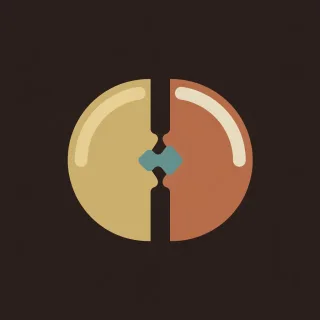

Pieces · handpan piece for D Kurd
Two sides
A round between the two sides of the pan. Each side has a figure, then they lock in.

- Kind
- Pieces
- Tempo
- 84 BPM
- Time signature
- 4/4
- Length
- 22 bars, about 63 seconds
- Notes used
- D3, A3, B♭3, C4, D4, E4, F4, G4, A4, C5
- Added
- 2026-10-11
Play in AlamutLearn bar by bar
About this pattern
Count in eighths, 1 and 2 and. Left is the figure for the left side: the ding, then D, F, high A on the beats, with B-flat as the second bass. Right is the figure for the right side: the ding, then low A, C, E, G between the beats, with C as the second bass. Both plays the two figures at once, one note from each side in turn, up in the first bar and down in the second. Turn swaps them: the right side takes the beats and the left side takes the offbeats. Learn Left and Right alone until each one sits, then Both.
Notation
Each line is one bar in 4/4. Numbers are the pan's fields, a dot is a rest, brackets hold notes struck together, and × is a tak on the shoulder. Read the number legend below.
Left
0 . 4 . 6 . 8 .2 . 8 . 6 . 4 .0 . 4 . 6 . 8 .2 . 8 . 6 4 . 2
Right
0 1 . 3 . 5 . 73 9 . 7 . 5 . 30 1 . 3 . 5 . 73 9 . 7 . 5 3 1
Both
0 1 4 3 6 5 8 7[23] 9 8 7 6 5 4 30 1 4 3 6 5 [89] .[23] 9 8 7 6 5 4 1
Both
0 1 4 3 6 5 8 7[23] 9 8 7 6 5 4 30 1 4 3 6 5 [89] .[23] 9 8 7 6 5 4 1
Turn
0 2 1 4 3 6 5 8[23] 8 5 6 3 4 1 20 2 1 4 3 6 5 [89][23] 8 5 6 3 4 . 1
Close
0 1 4 . 6 . 8 .[01] . . . . . . .
Number legend
0D3 (ding), 146.8 Hz1A3, 220.0 Hz2B♭3, 233.1 Hz3C4, 261.6 Hz4D4, 293.7 Hz5E4, 329.6 Hz6F4, 349.2 Hz7G4, 392.0 Hz8A4, 440.0 Hz9C5, 523.3 Hz×tak, a rim or shoulder tap
دو سو
دوری میان دو سوی ساز. هر سو یک فیگور دارد، بعد هر دو در هم قفل میشوند.
چنگها را بشمارید: ۱ و ۲ و. «چپ» فیگور سمت چپ است: دینگ، بعد رِ، فا و لای بالا روی ضربها، با سیبمل بهعنوان باس دوم. «راست» فیگور سمت راست است: دینگ، بعد لای بم، دو، می و سل میان ضربها، با دو بهعنوان باس دوم. «هر دو» دو فیگور را با هم میزند، هر بار یک نت از یک سو، در میزان اول رو به بالا و در میزان دوم رو به پایین. «چرخش» جایشان را عوض میکند: سمت راست ضربها را میگیرد و سمت چپ پشتضربها را. «چپ» و «راست» را جدا تمرین کنید تا هر کدام جا بیفتد، بعد «هر دو» را.
More Pieces
Original pieces with named sections, written for this instrument.